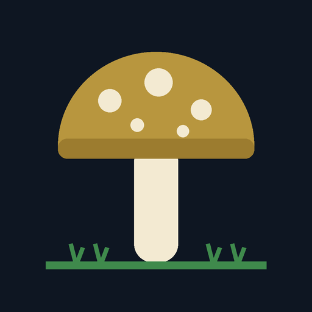
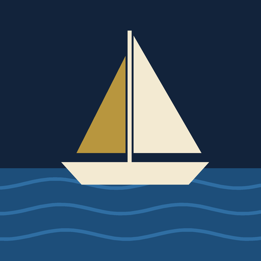
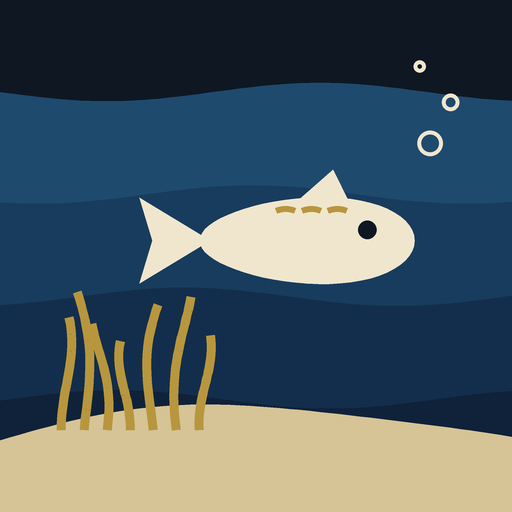
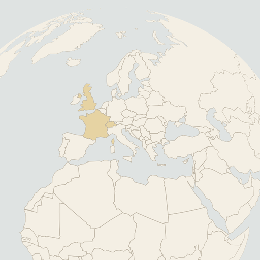

Cartes
Dix cartes, chacune avec ses thèmes.
 TarentaiseLes Chapelles : itinéraire, avalanche, neige, soleil, météo
TarentaiseLes Chapelles : itinéraire, avalanche, neige, soleil, météo
 MaréesDe Bréhat au cap Fréhel : marée, estran, traversée, oiseaux
MaréesDe Bréhat au cap Fréhel : marée, estran, traversée, oiseaux
 La RéunionLumière, versants, lever et coucher, drone
La RéunionLumière, versants, lever et coucher, drone
 ChampignonsAutour d'Annecy : où chercher, pluie, forêts
ChampignonsAutour d'Annecy : où chercher, pluie, forêts

Champignons 06Gréolières, Bar-sur-Loup et Sophia Antipolis
VoileDe Cerbère à Menton et la Corse : vent, mer, fonds, ports, route, bateau PlongéeLérins et cap d'Antibes : la mer vidée, fonds, poissons, sites, parcours, conditions
PlongéeLérins et cap d'Antibes : la mer vidée, fonds, poissons, sites, parcours, conditions

Plongée BretagneBaie de Saint-Brieuc, de Binic à Erquy : les fonds selon la marée, poissons, épaves, conditions RandosCorse et France : mes tracés sur le relief, profil, pente, sol, itinéraire sur sentiers
RandosCorse et France : mes tracés sur le relief, profil, pente, sol, itinéraire sur sentiers

Cartes anciennesLe monde, une carte historique par pays : Cassini, Dufour, Inō, Speed, MitchellSur ordinateur : les thèmes sont à gauche de la carte. F affiche la carte en grand écran, avec peu de texte ; dans le menu de chaque carte, « Envoyer cette vue au téléphone » donne un code à scanner.